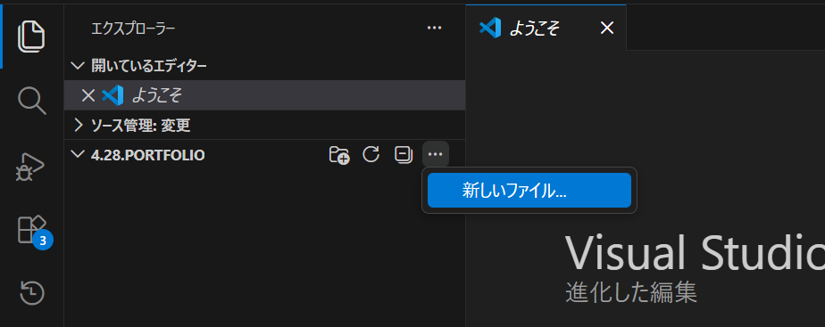
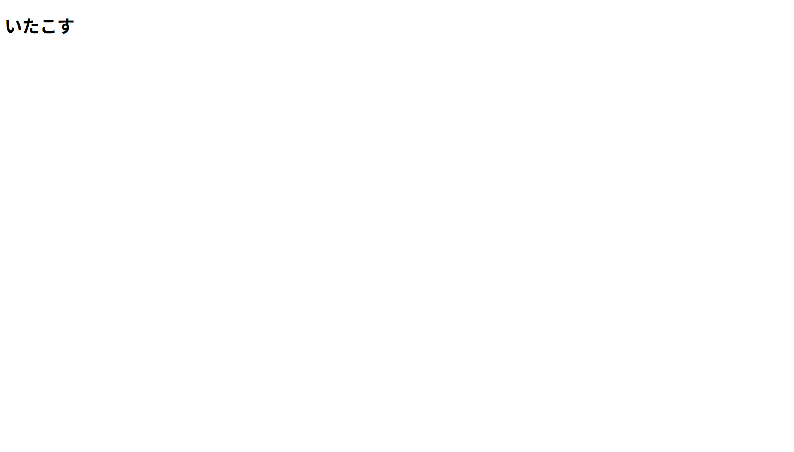
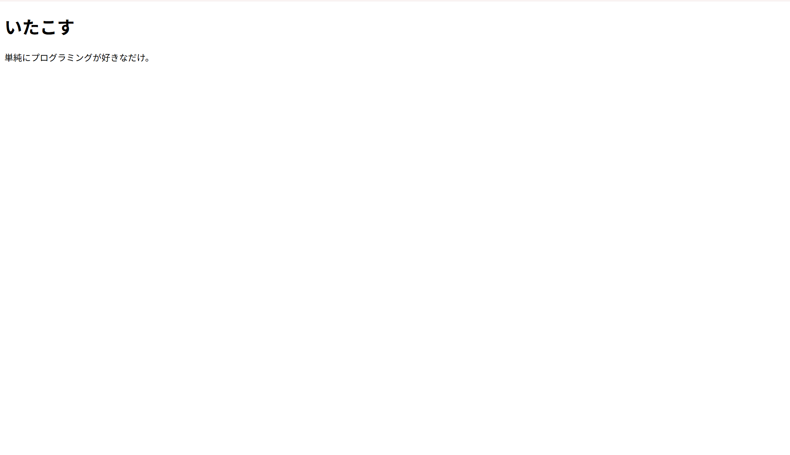
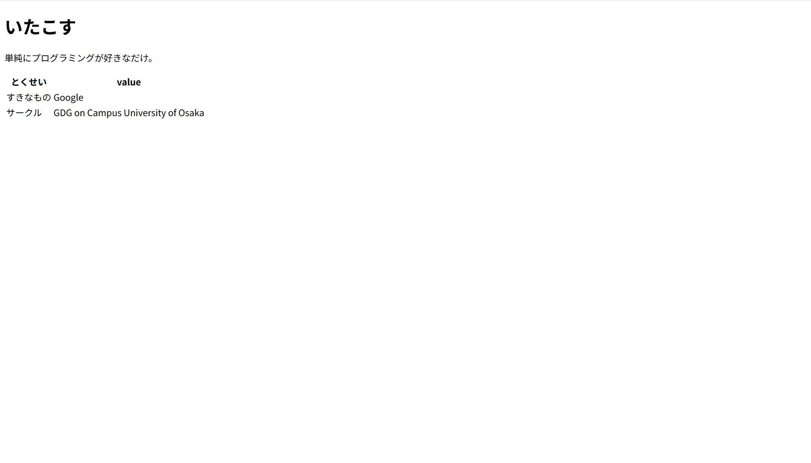
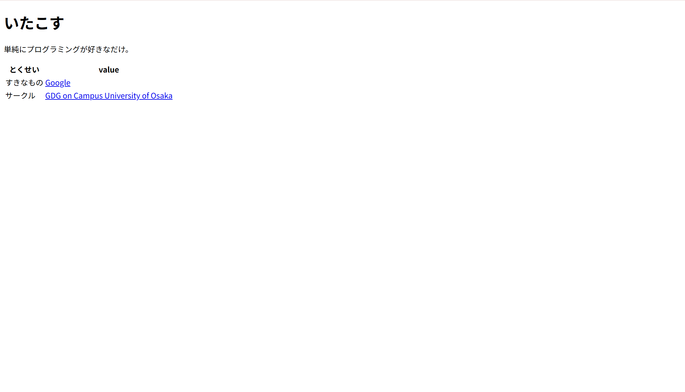
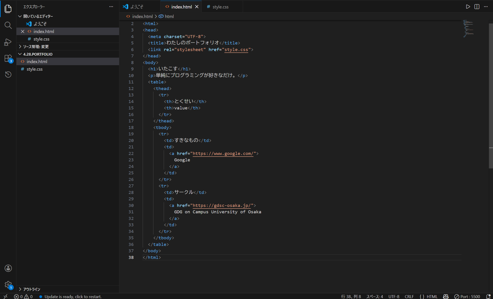
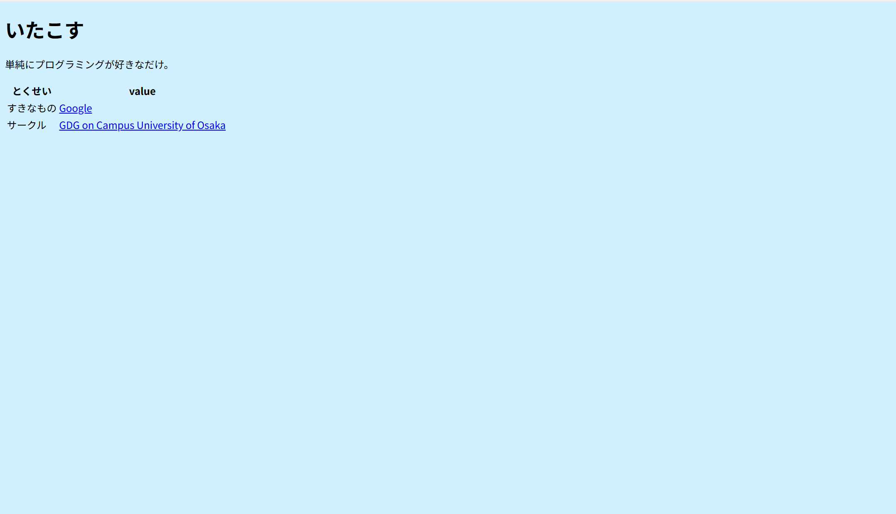
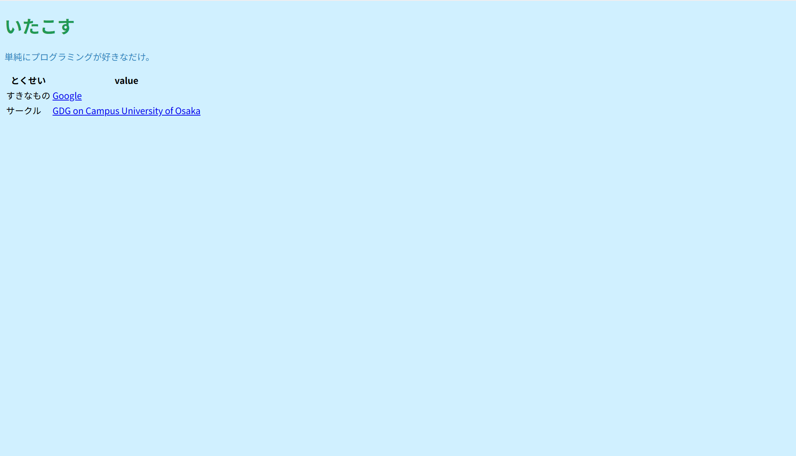
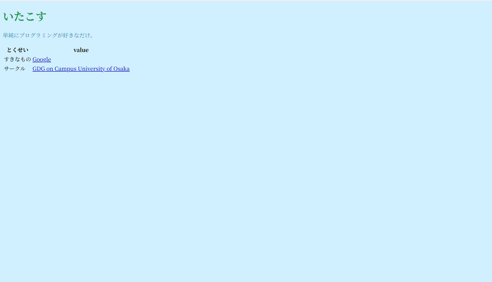
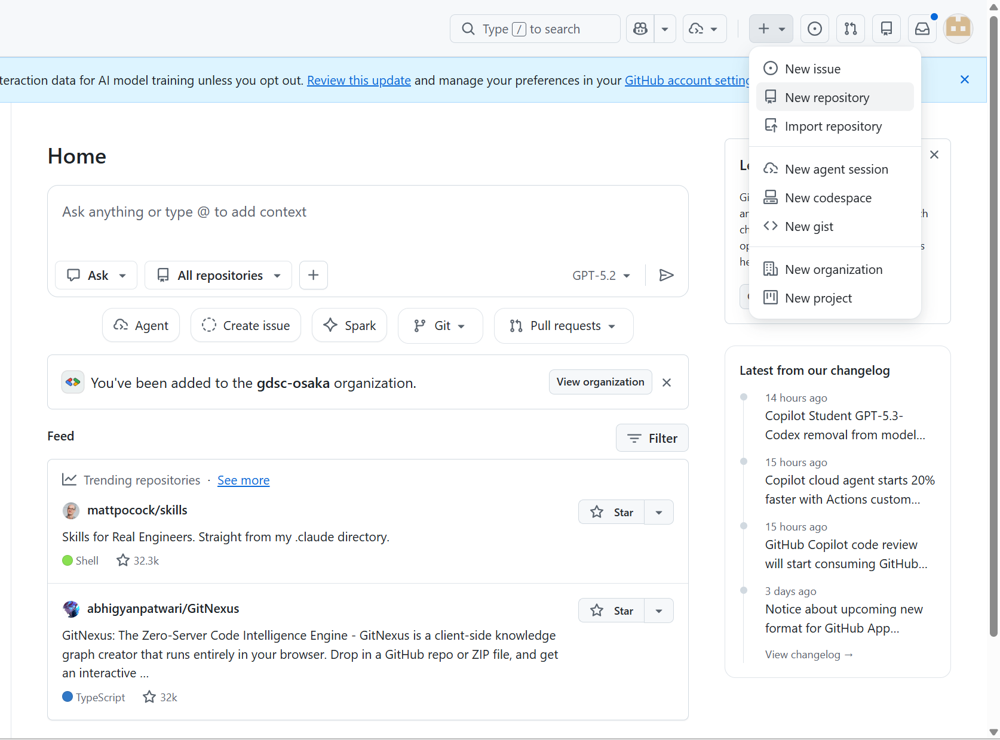

この Codelab では、プログラミングや Web 制作の経験がない方を対象に、2 時間という短い時間で簡単な自分のポートフォリオサイトを作成し、インターネット上に公開する手順を体験します。
学習内容:
必要なもの:
注意: この Codelab は時間短縮のため、駆け足での進行となります。まずは Web サイトの公開を体験し、動くものを作る達成感を味わいましょう！ 時間に余裕のある方は、更なるカスタマイズに挑戦してみてください。最低限 Step 3 までの完了を目指しますが、Step 4 以降にも積極的にチャレンジしてみましょう。
はじめに、Web サイトを作成するための道具を準備します。
Web サイトの設計図 (コード) を書くためのエディタ「Visual Studio Code (VSCode)」をインストールします。
Web サイトの作成を始める前に、成果物を保存するフォルダを作っておきましょう。
作成した Web サイトのバージョンを管理したり、インターネット上に公開したりするために、GitHub というサービスを使います。そのためのアカウントを作成しましょう。
@ マークの入った、受信可能なメールアドレスを入力してください。確認メールが届きます。いよいよ Web サイトの中身を作っていきます。Web ページの構造を定義するには、HTML (HyperText Markup Language) を使います。HTML は「タグ」と呼ばれる要素を使って、テキストや画像などのコンテンツを構造化します。
<html>, <head>, <body>HTML には <html>, <head>, <body> という 3 つの主要なタグがあります。
<html> タグは、HTML 文書全体を囲むタグです。<head> タグは、Web ページのタイトルや、CSS ファイルのリンクなどの情報を記述するタグです。<body> タグは、実際にブラウザに表示される内容を記述するタグです。まずはこれらのタグを使って、Web ページの基本的な構造を作ってみましょう。
index.html ファイルを作成
index.html と入力して Enter キーを押します。index.html が開かれるので、以下のコードを正確に入力（またはコピー＆ペースト）します。Ctrl+S (Windows) または Cmd+S (Mac) でファイルを保存しましょう。index.html
<!DOCTYPE html>
<html>
<head>
<meta charset="UTF-8">
<title>わたしのポートフォリオ</title>
</head>
<body>
</body>
</html>
今作成した Web ページがどのように見えるか、ブラウザで確認してみましょう。VSCode の拡張機能を使うと、編集した HTML ファイルをリアルタイムで表示できます。
Live Server と入力します。Live Server (Ritwick Dey 作) を選択し、「インストール (Install)」ボタンをクリックします。index.html のエディタ画面に戻ります。Go Live ボタンをクリックします。真っ白な画面が表示されたら OK です。次の Step から内容を追加していきます！
Web ページに見出しをつけるには、<h1> タグを使います。<h1> タグは、Web ページの中で最も重要な見出しを表します。
index.html ファイルの <body> の中に、以下のコードを追加してください。<h1>ここをあなたの名前に変更</h1>
<h1> タグの中身をあなたの名前に書き換えてみましょう！
index.html<!DOCTYPE html>
<html>
<head>
<meta charset="UTF-8">
<title>わたしのポートフォリオ</title>
</head>
<body>
<h1>いたこす</h1>
</body>
</html>
Web ページに段落を追加するには、<p> タグを使います。<p> タグは、Web ページの中で文章の段落を表します。
index.html ファイルの <body> の中で、先程の <h1> タグの下に以下のコードを追加してください。<p>ここをあなたの自己紹介文に変更。Web開発に興味があります！</p>
<p> タグの中身をあなたの自己紹介文に書き換えてみましょう！
index.html<!DOCTYPE html>
<html>
<head>
<meta charset="UTF-8">
<title>わたしのポートフォリオ</title>
</head>
<body>
<h1>いたこす</h1>
<p>単純にプログラミングが好きなだけ。</p>
</body>
</html>
だんだん HTML の書き方には慣れてきましたか？ 次は、Web ページ上で表を表示する <table>, <thead>, <tbody>, <tr>, <th>, <td> について紹介します。
<table> タグは、表全体を囲むタグです。表を作成する際は、まずこの <table> タグを記述します。<thead> タグは、表の見出し部分を表します。<tbody> タグは、表のデータ部分を表します。<tr> タグは、表の行を表すタグです。<th> タグは、表の見出しのセルを表すタグです。通常、表の最初の行に記述し、各列のタイトルを示します。<td> タグは、表のデータセルを表すタグです。各行のデータが入る部分です。文章だけ読んでもわかりにくいと思うので、実際の HTML を見てみましょう。
index.html ファイルの <body> の中で、先程の <p> タグの下に以下のコードを追加してください。<table>
<thead>
<tr>
<th>とくせい</th>
<th>value</th>
</tr>
</thead>
<tbody>
<tr>
<td>すきなもの</td>
<td>Google</td>
</tr>
<tr>
<td>サークル</td>
<td>GDG on Campus University of Osaka</td>
</tr>
</tbody>
</table>
<th> や <td> の中身を変えたり、<tr> で行を増やしたりして、自分のプロフィールを書いてみましょう！
index.html<!DOCTYPE html>
<html>
<head>
<meta charset="UTF-8">
<title>わたしのポートフォリオ</title>
</head>
<body>
<h1>いたこす</h1>
<p>単純にプログラミングが好きなだけ。</p>
<table>
<thead>
<tr>
<th>とくせい</th>
<th>value</th>
</tr>
</thead>
<tbody>
<tr>
<td>すきなもの</td>
<td>Google</td>
</tr>
<tr>
<td>サークル</td>
<td>GDG on Campus University of Osaka</td>
</tr>
</tbody>
</table>
</body>
</html>
ここでは、Web ページにリンクを追加する方法を紹介します。リンクは、Web ページ同士をつなぐ大切な要素で、例えば皆さんのお使いの SNS へのリンクを貼ることができます。 HTML でリンクを作成するには <a> タグを使います。リンクの基本的な書き方は、以下の通りです。
<a href="リンク先のURL">リンクのテキスト</a>
では、これを元にみなさんの SNS などへのリンクを貼ってみましょう！
<tr> を、以下の例のように書き換えてください。<tr>
<td>すきなもの</td>
<td>
<a href="https://www.google.com/">
Google
</a>
</td>
</tr>

まだまだ HTML には面白い機能がありますが、本日のワークショップでは一旦ここまででとしておきます。
では、これまでに作成したレイアウトにもっとオリジナリティを出すにはどうすればいいでしょうか？ 次の Step からは、CSS を用いて Web ページの見た目を調整してみます。
index.html<!DOCTYPE html>
<html>
<head>
<meta charset="UTF-8">
<title>わたしのポートフォリオ</title>
</head>
<body>
<h1>いたこす</h1>
<p>単純にプログラミングが好きなだけ。</p>
<table>
<thead>
<tr>
<th>とくせい</th>
<th>value</th>
</tr>
</thead>
<tbody>
<tr>
<td>すきなもの</td>
<td>
<a href="https://www.google.com/">
Google
</a>
</td>
</tr>
<tr>
<td>サークル</td>
<td>
<a href="https://gdsc-osaka.jp/">
GDG on Campus University of Osaka
</a>
</td>
</tr>
</tbody>
</table>
</body>
</html>
CSS (Cascading Style Sheets) は、Web ページの見た目 (スタイル) を定義するための言語です。CSS を使うことで、文字の色や大きさ、背景色、要素の配置など、Web ページの様々な要素を装飾することができます。
CSS は、セレクタ (selector)、プロパティ (property)、値 (value) の 3 つの要素で構成されています。
セレクタ {
プロパティ: 値;
}
body, h1, p)background-color, color, font-size)red, 20px, bold)CSS のコードを見たほうが分かりやすいと思うので、実際に書いてみましょう。まずは CSS ファイルを作成します。
index.html と同じ場所に新しいファイルを作成します。style.css と入力して Enter キーを押します先ほど style.css を作成しましたが、ただファイルを作成するだけでは反映されません。HTML で CSS ファイルの存在を教えてあげる必要があるので、以下のようなコードを index.html の <head> の中に書き加えてください。
<link rel="stylesheet" href="style.css">

index.html<!DOCTYPE html>
<html>
<head>
<meta charset="UTF-8">
<title>わたしのポートフォリオ</title>
<link rel="stylesheet" href="style.css">
</head>
<body>
<h1>いたこす</h1>
<p>単純にプログラミングが好きなだけ。</p>
<table>
<thead>
<tr>
<th>とくせい</th>
<th>value</th>
</tr>
</thead>
<tbody>
<tr>
<td>すきなもの</td>
<td>
<a href="https://www.google.com/">
Google
</a>
</td>
</tr>
<tr>
<td>サークル</td>
<td>
<a href="https://gdsc-osaka.jp/">
GDG on Campus University of Osaka
</a>
</td>
</tr>
</tbody>
</table>
</body>
</html>
style.css: 空のファイルWeb ページ全体のデザインを設定してみましょう。以下の例では <body> の背景色を薄い水色にしています。
style.css ファイルに、以下のコードを追加してください。body {
background-color: #d0f0ff; /* 背景色を薄い水色に */
}
background-color の値を好きな色に変更してみましょう！色の名前やコードはこちらのサイトなどが参考になります: HTML Color Codes
index.html: 変更なしstyle.cssbody {
background-color: #d0f0ff; /* 背景色を薄い水色に */
}
見出し (<h1> など) や段落 (<p> など) の文字色を変えてみましょう。
style.css ファイルに、以下のコードを追加してください。h1 {
color: #229954; /* 見出しの文字色を緑色に */
}
p {
color: #2e86c1; /* 段落の文字色を青色に */
}
color の値を好きな色に変更してみましょう！
index.html: 変更なしstyle.cssbody {
background-color: #d0f0ff; /* 背景色を薄い水色に */
}
h1 {
color: #229954; /* 見出しの文字色を緑色に */
}
p {
color: #2e86c1; /* 段落の文字色を青色に */
}
皆さんの中には、これまでにプレゼン資料やレポートを作ったことがある人も多いと思いますが、その際にフォント (文字の形) を変更した経験のある方もいるのではないでしょうか。Web 上でも自分の好きなフォントを選んで表示することができます。
style.css ファイルに、以下のコードを追加してください。body {
font-family: serif; /* セリフ体 (≒ 明朝体) */
}
font-family の値を好きなフォントに変更してみましょう！フォントの値は こちらのドキュメント が参考になります。
ここまでで HTML と CSS の話は一旦終了としますが、Web サイトの仕組みについてなんとなく理解ができたでしょうか？ 次の Step からは、これまでに作成した Web サイトを公開する方法について説明します。
index.html: 変更なしstyle.cssbody {
background-color: #d0f0ff; /* 背景色を薄い水色に */
}
h1 {
color: #229954; /* 見出しの文字色を緑色に */
}
p {
color: #2e86c1; /* 段落の文字色を青色に */
}
body {
font-family: serif; /* セリフ体 (≒ 明朝体) */
}
ここまで皆さん、お疲れ様でした！いよいよ作成した Web サイトをこれから公開してみたいと思います。 公開する方法はたくさんあるのですが、今回はその中でも無料で簡単にできる GitHub Pages を使いたいと思います。
GitHub は、ソフトウェア開発に欠かせない「バージョン管理」と「共同作業」ができるプラットフォームです。コードの変更履歴を管理し、複数人での共同作業を円滑に進めることができます。
GitHub では、それぞれのプロジェクトを「リポジトリ」という単位でまとめています。それでは、今回作成した Web サイトを管理する新しい「リポジトリ」を作成してみましょう。

[your-GitHub-username].github.io と正確に入力します。 taro-yamada なら taro-yamada.github.ioリポジトリが作成されると、「Quick setup」などの画面が表示されます。ここにファイルをアップロードします。
index.html と style.css の 2 つのファイルを、画面の点線枠の中にドラッグ＆ドロップします。(間違えてフォルダごとアップロードしないように気をつけましょう)ファイルを置いただけではまだ公開されません。GitHub Pages の機能を有効にします。
main」（または master）、「Folder: / (root)」が選択されていることを確認し、「Save」ボタンをクリックします。設定が完了すると、「Your site is live at ...」のようなメッセージが表示されます（表示されるまで少し時間がかかる場合があります）。
表示された URL (https://[your-GitHub-username].github.io) をクリックして、作成した Web サイトがインターネット上で見られるか確認しましょう！
[your-GitHub-username].github.io と正確に一致しているかindex.html) が正しいか不明な場合はメンターに質問しましょう。
おめでとうございます！これであなたのポートフォリオサイトが完成し、世界中に公開されました！
皆さん、大変お疲れ様でした！このワークショップでは、たった 1 時間半で以下のことを達成しました。
今回は時間短縮のため、ページに画像を表示したり、動きのあるコンテンツを作成したりすることはしていません。こちらも非常に楽しい内容なので、今後ぜひ体験してみてください。 また、今回は GitHub に直接ファイルをアップロードしました。これは手軽ですが、実際の Web 開発では Git というバージョン管理システムを使って、変更履歴を記録しながら GitHub と連携するのが一般的です。こちらも慣れると非常に強力なツールとなります。
index.html にもっと詳しい自己紹介や、作品紹介（もしあれば）を追加してみましょう。画像 (<img> タグ) を追加するのも良いですね。style.css で、もっと色々なプロパティ (例: border, font-size, margin, padding) を試して、デザインを改善してみましょう。
もし Web 開発の経験が少しあるなら、以下の課題に挑戦してみるのも面白いでしょう。(詳細は別途資料を参照)
git add, git commit, git push) を使って GitHub にファイルを送信し、GitHub Pages を更新してみる。もし Web 開発の経験が少しあるなら、以下の課題に挑戦してみるのも面白いでしょう。
これらのフレームワークを使うことで、より高度なポートフォリオサイトを構築できます。例えば、以下のような機能を追加できます。
ぜひ、これらのフレームワークを学んで、あなたのポートフォリオサイトをさらに進化させてください！
本日のメインのワークショップはここで一区切りです。本当にお疲れ様でした！
時間に余裕のある方や、ワークショップ後にさらに学びたい方は、ぜひ以下の Step 6 〜 Step 9 にもチャレンジしてみてください。それぞれの「Next Steps」を実際にハンズオンで体験できる構成になっています。
ここからは、Step 5 で紹介した「Next Steps」を実際に手を動かしながら体験していきます。まずは、ポートフォリオの中身をもっと充実させながら、HTML と CSS をもう少し深く触ってみましょう。
<h2>)<h1> よりも一段下の見出しには <h2> タグを使います。「自己紹介」「作品紹介」のようなセクション分けに便利です。
index.html の <body> の中、表 (</table>) の下に以下のコードを追加してください。<h2>自己紹介</h2>
<p>
大阪大学に通う 1 年生です。
普段は Web 開発と機械学習に興味を持って勉強しています。
好きな食べ物はラーメンです。
</p>
<h2>作品紹介</h2>
<ul>
<li>はじめてのポートフォリオサイト (今ここ！)</li>
<li>大学の課題で作った Python のじゃんけんゲーム</li>
<li>友達と作ったクイズアプリ</li>
</ul>
<ul> と <li> は箇条書き (リスト) を表すタグです。<ul> で囲んだ中に複数の <li> を並べます。<img>)Web ページに画像を表示するには <img> タグを使います。<img> は閉じタグが不要な特殊なタグです。
index.html と同じ場所に img という名前のフォルダを作り、その中に画像を入れます (例: img/profile.png)。<h1> タグの下に以下のコードを追加してください。<img src="img/profile.png" alt="プロフィール画像">
src は画像のファイルパス、alt は画像が表示できないときに代わりに表示される説明文です。レイアウトをもう少しきれいにするための CSS を追加してみましょう。
style.css の末尾に以下のコードを追加してください。body {
max-width: 720px; /* 横幅を制限して読みやすく */
margin: 0 auto; /* 左右中央揃え */
padding: 24px; /* 内側に余白を作る */
line-height: 1.7; /* 行間を広めに */
}
h2 {
border-bottom: 2px solid #229954; /* 下線を引く */
padding-bottom: 4px;
margin-top: 32px;
}
img {
max-width: 200px;
border-radius: 50%; /* 円形にトリミング */
}
table {
border-collapse: collapse; /* セルの線を 1 本にまとめる */
}
th, td {
border: 1px solid #888;
padding: 6px 12px;
}
margin は要素の 外側、padding は要素の 内側 の余白を表します。border-radius: 50%; は要素の角を丸めるプロパティで、画像を円形に切り抜けます。これまでに作ったポートフォリオは、PC で見るとちょうど良い見た目ですが、スマホで見ると文字が小さくなったり、レイアウトが崩れたりすることがあります。ここでは、スマホでも見やすくする方法 (レスポンシブデザイン) と、JavaScript でちょっとした動きをつける方法を紹介します。
スマホで Web ページを正しく表示するには、<head> 内に viewport の指定が必要です。
index.html の <head> 内に以下の 1 行を追加してください。<meta name="viewport" content="width=device-width, initial-scale=1.0">
画面サイズによってスタイルを切り替えるには、CSS の メディアクエリ を使います。
style.css の末尾に以下のコードを追加してください。/* 画面の横幅が 600px 以下のときだけ適用される */
@media (max-width: 600px) {
body {
padding: 12px;
font-size: 14px;
}
img {
max-width: 120px;
}
h1 {
font-size: 24px;
}
}
JavaScript を使うと、Web ページに動きを加えることができます。簡単な例として、ボタンを押すとメッセージが出るプログラムを書いてみましょう。
index.html の <body> の末尾 (閉じタグ </body> の直前) に以下のコードを追加してください。<button onclick="sayHello()">クリックしてね</button>
<script>
function sayHello() {
alert('こんにちは！ポートフォリオを見てくれてありがとう。');
}
</script>
JavaScript を使わなくても、CSS だけでマウスカーソルが乗ったときの動きを表現できます。
style.css に以下のコードを追加してください。button {
background-color: #229954;
color: white;
border: none;
padding: 8px 16px;
border-radius: 4px;
cursor: pointer;
transition: transform 0.2s, background-color 0.2s; /* 変化をなめらかに */
}
button:hover {
background-color: #1e8449;
transform: scale(1.05); /* ホバーで少し大きくする */
}
Step 4 では、GitHub の Web 画面からファイルを直接アップロードしました。実はこの方法は手軽ですが、ファイルが増えてくると大変です。ここでは、プロの Web 開発者も使っている Git というツールを使って、もっとスマートにファイルを管理する方法を学びます。
Mac には多くの場合 Git が最初から入っています。確認するには、ターミナル (アプリケーション → ユーティリティ → ターミナル) を開いて以下を実行します。
git --version
git version 2.xx.x のように表示されれば OK です。表示されない場合は、画面の指示に従って Xcode Command Line Tools をインストールしてください。
インストール後、自分の名前とメールアドレスを Git に教えます。これは、誰がコミット (変更を記録) したかの情報として残ります。
"..." の中身は GitHub に登録したものに合わせるのがおすすめです)。git config --global user.name "あなたの名前"
git config --global user.email "あなたのメールアドレス"
GitHub 上にあるリポジトリを、自分のパソコンにダウンロードしてくることを「クローン (clone)」と言います。
https://github.com/[your-username]/[your-username].github.io.git) をコピーします。cd Desktop)。git clone https://github.com/[your-username]/[your-username].github.io.git
ファイルを編集してから GitHub に反映するまでの基本的な流れは「add → commit → push」の 3 ステップです。
index.html などを編集して保存します。# どのファイルが変更されたか確認する
git status
# 変更したファイルを「次のコミットに含める」状態にする
git add .
# 変更内容を 1 つの履歴として記録する
git commit -m "自己紹介を更新"
# ローカルの履歴を GitHub に送信する
git push
https://[your-username].github.io に変更が反映されます。git add: 「この変更を記録対象にしますよ」と Git に伝える操作git commit: ステージングされた変更を 1 つの履歴として保存する操作git push: ローカル (パソコン上) の履歴を GitHub に送信する操作最後に、世界中の Web 開発で広く使われている React というライブラリの基本に触れてみましょう。React を使うと、ボタンや入力欄などの UI 部品を「コンポーネント」として再利用しやすい形で組み立てられるようになります。
React は、Meta (旧 Facebook) が開発した JavaScript ライブラリです。次のような特徴があります。
React を動かすには、JavaScript をパソコン上で実行できる「Node.js」が必要です。
node --version
npm --version
React プロジェクトを手早く立ち上げるツール「Vite (ヴィート)」を使ってみます。
React → JavaScript を選びます。npm create vite@latest my-react-portfolio
cd my-react-portfolio
npm install
npm run dev
http://localhost:5173/ のような URL をブラウザで開いてみましょう。React のロゴが回るサンプルページが表示されたら成功です！my-react-portfolio フォルダを開きます。src/App.jsx を開いて、中身をまるごと以下のように書き換えてください。function App() {
return (
<div>
<h1>いたこすのポートフォリオ (React 版)</h1>
<p>React で作り直してみました！</p>
</div>
);
}
export default App;
React の真価は「状態 (state)」と組み合わせたときに発揮されます。ボタンを押すたびにカウントが増えるサンプルを書いてみましょう。
import { useState } from 'react';
function App() {
const [count, setCount] = useState(0);
return (
<div>
<h1>いたこすのポートフォリオ</h1>
<p>ボタンが押された回数: {count}</p>
<button onClick={() => setCount(count + 1)}>
+1 する
</button>
</div>
);
}
export default App;
useState(0) で「初期値 0 の状態」を作っています。setCount(...) を呼び出すと、React が自動的に画面を再描画してくれます。{count} のように {} で囲むことで、JSX の中に JavaScript の値を埋め込めます。React で作ったサイトを GitHub Pages で公開するには、ビルド (本番用ファイルの生成) や、vite.config.js の base 設定など、いくつか追加の作業が必要です。詳しく学びたい方は「Vite GitHub Pages デプロイ」などで検索してみたり、メンターに質問してみてください。
ここまで読み終えた皆さん、本当にお疲れ様でした！今日のワークショップから始まった皆さんの Web 開発の旅が、これからどんどん広がっていくことを願っています。ぜひ、今日作ったサイトをベースに、自分だけのポートフォリオサイトを作り込んでいってください！